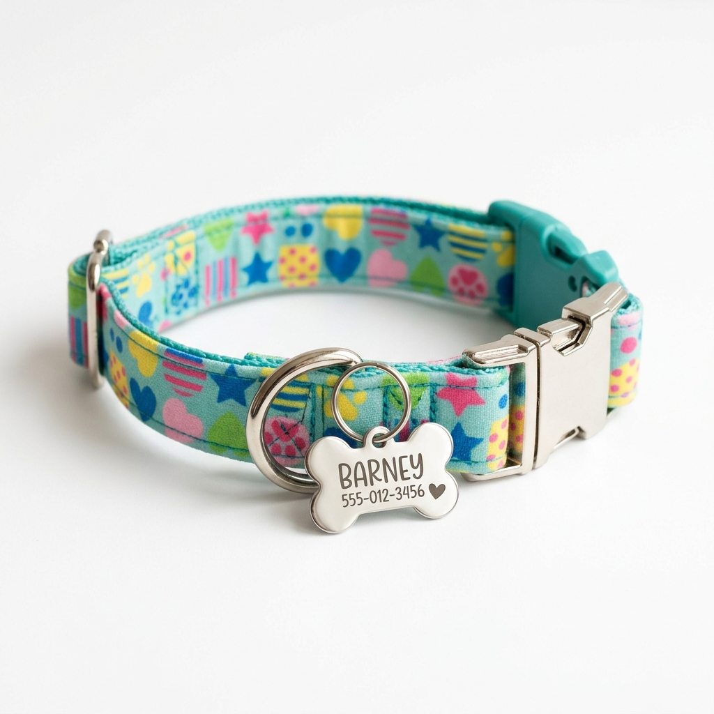
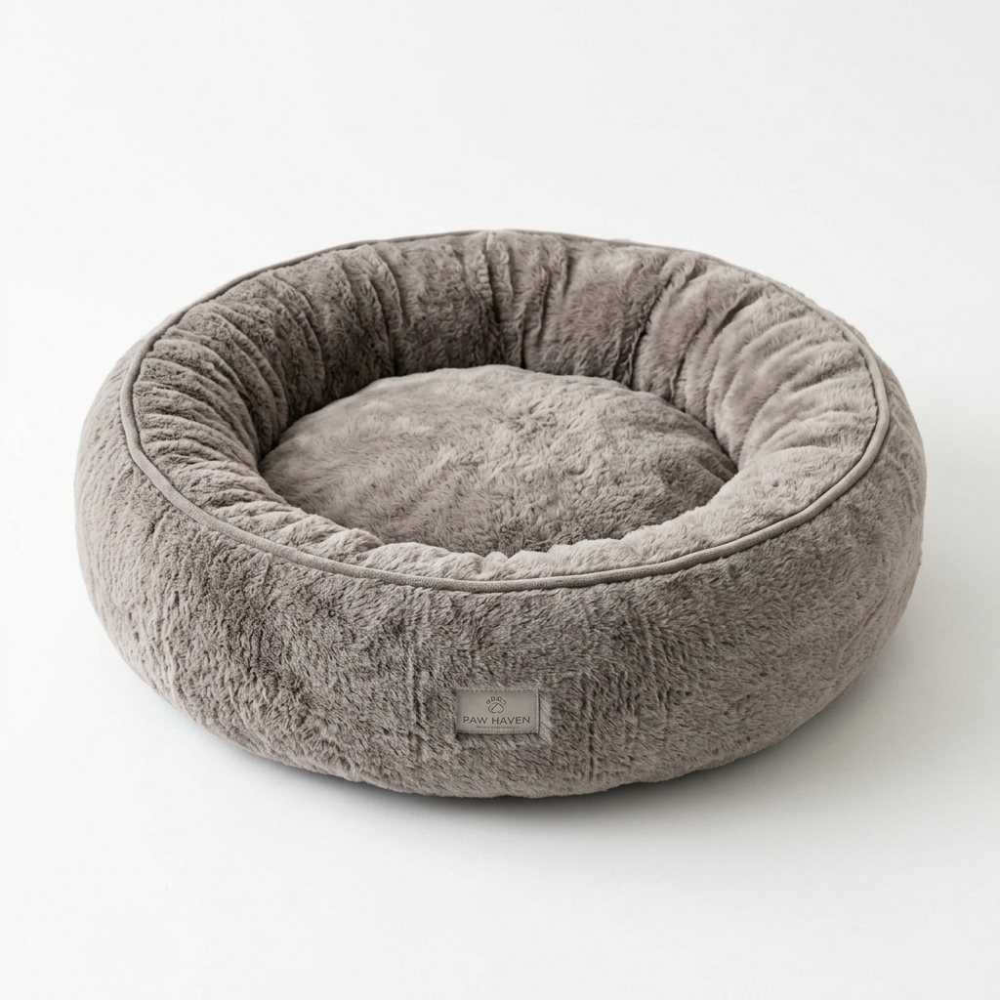

Acessórios para Pets
Oferecemos uma ampla variedade de acessórios para deixar o seu animal de estimação mais confortável, seguro e estiloso. Confira nossos produtos disponíveis:
Produto 1 — Coleira Ajustável com Plaquinha Personalizada

Descrição:
Coleira ajustável de nylon resistente, disponível em diversas cores e tamanhos (P, M e G).
Acompanha plaquinha de identificação personalizável em formato de osso, onde você pode gravar
o nome do seu pet e o seu telefone para contato. Ideal para passeios diários, segura e confortável.
Suporta cães de até 30 kg.
Características:
- Material: Nylon resistente com fivela de plástico reforçado
- Tamanhos disponíveis: Pequeno (P), Médio (M) e Grande (G)
- Cores: Azul, Rosa, Verde, Vermelho e Amarelo
- Inclui plaquinha de identificação
- Argola metálica para prender a guia
Valor: R$ 35,90
Produto 2 — Caminha Redonda Pelúcia Super Soft

Descrição:
Caminha redonda confeccionada em pelúcia macia de alta qualidade, ideal para proporcionar
conforto e aconchego para cães e gatos. O formato redondo com bordas elevadas oferece
segurança e sensação de proteção para o seu pet durante o descanso e o sono.
A capa é removível e lavável na máquina de lavar.
Características:
- Material: Pelúcia super soft com enchimento de espuma
- Tamanhos: Pequena (50 cm), Média (70 cm) e Grande (90 cm)
- Cores: Bege, Cinza, Marrom e Rosa
- Capa removível e lavável
- Antiderrapante na parte inferior
- Indicada para cães e gatos de até 15 kg
Valor: R$ 89,90
Dúvidas? Entre em contato: (11) 3456-7890 | contato@patafeliz.com.br